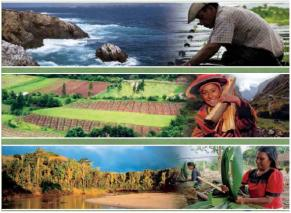

Conservación del patrimonio natural y cultural
La conservación del patrimonio natural y cultural están estrechamente relacionadas. Los sitios culturales a menudo tienen una conexión importante con el medio ambiente circundante y pueden verse afectados por cambios ambientales, como la erosión y la subida del nivel del mar. La protección del patrimonio natural, como la conservación de áreas naturales, puede ayudar a proteger los sitios culturales y su entorno. Además, el uso sostenible de los recursos culturales y naturales puede contribuir al desarrollo sostenible de las comunidades locales.
